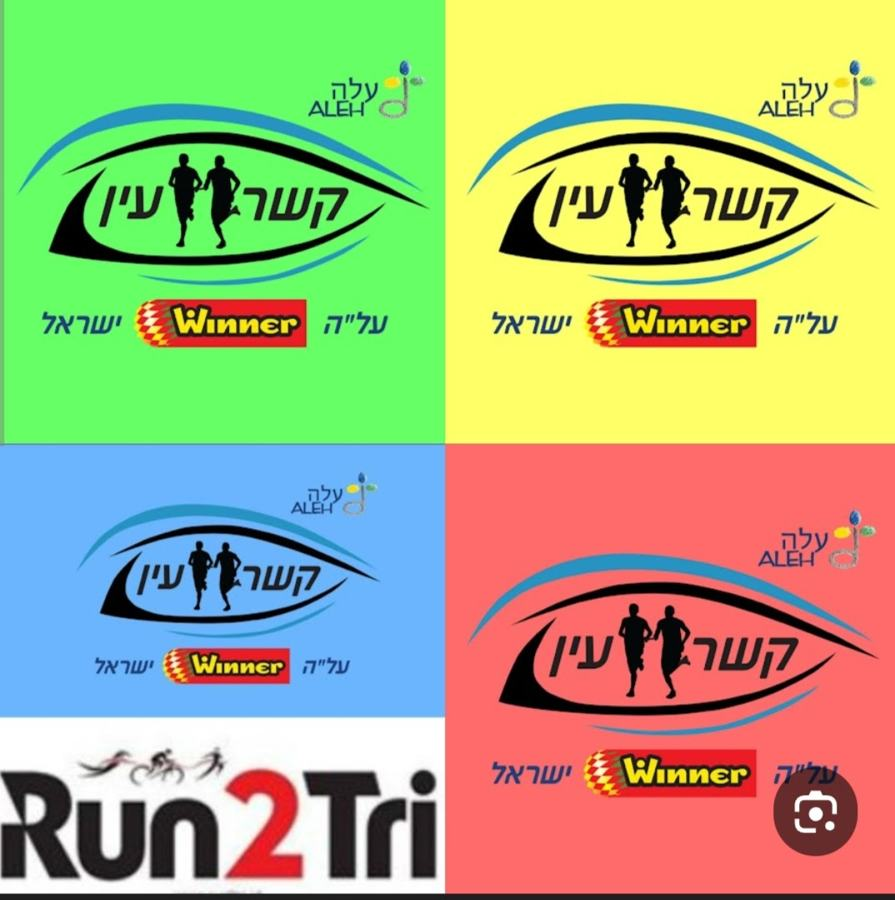
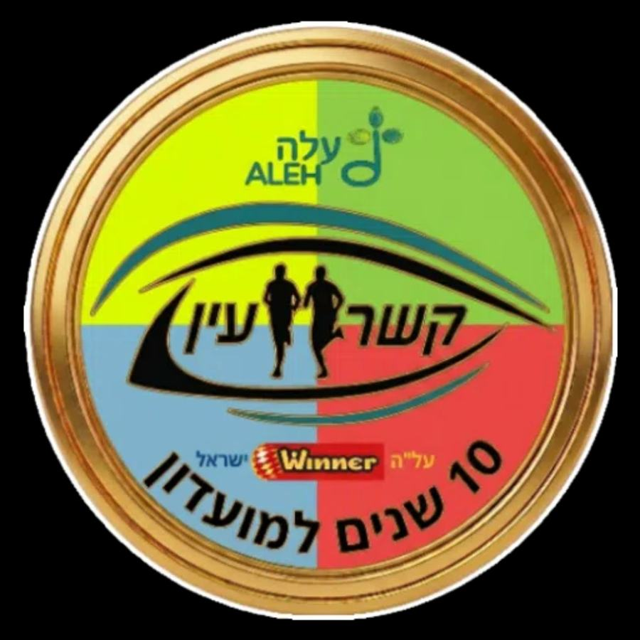
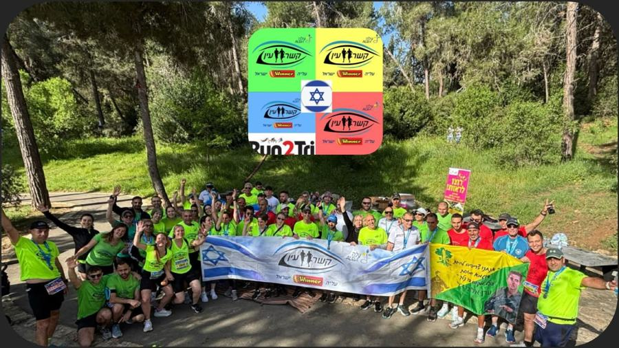
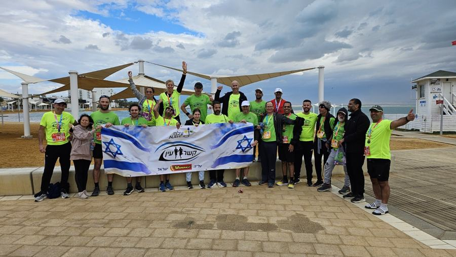

שאלת את עצמך למה אנחנו
רצים מחוברים?
נשמח לספר.
קשר עין
אנחנו קשר עין.
מועדון ריצה לעיוורים ולקויי ראייה ולמתנדבים שרצים איתם.
רצים יחד, מחוברים ברצועת ליווי קטנה שמאפשרת לרץ הרואה להוביל את הרץ העיוור.
מועדון ריצה לעיוורים ולקויי ראייה ולמתנדבים שרצים איתם.
רצים יחד, מחוברים ברצועת ליווי קטנה שמאפשרת לרץ הרואה להוביל את הרץ העיוור.
אז איך זה עובד?
הרץ המלווה הוא העיניים של החבר שרץ לצדו. באמצעות תקשורת רציפה ואמון, הוא מכוון, מתריע על מכשולים ומתאים את הדרך והקצב — כדי ששניהם יוכלו פשוט לרוץ יחד.
קשר עין במספרים
10שנות פעילות
4קבוצות
~45רצים
~120מתנדבים

ירושלים • חיפה • באר שבע • מודיעין
מתאמנים ומשתתפים במרוצים בארץ ובחו"ל – ממרחקים קצרים ועד חצי מרתון, מרתון ואולטרה.
מנצחים פעמיים

קשר עין הוא הרבה יותר ממועדון ריצה. זו קבוצה מגוונת של אנשים שמחוברים בחוויות, בחברויות ובהרבה קילומטרים של ריצה משותפת.
כשאנחנו רצים יחד, אנחנו מנצחים פעמיים –
עושים ספורט ומסייעים לאחרים.
רוצה לרוץ איתנו?
לא צריך לדעת איך מלווים רץ עיוור. את זה אנחנו נלמד אותך.
הצטרפו לקבוצה הקרובה
ירושלים
אלון · 052-3830429
WhatsAppאלון · 052-3830429
חיפה
מחמוד · 054-7370946
WhatsAppמחמוד · 054-7370946
באר שבע
ליאור · 052-6244805
WhatsAppליאור · 052-6244805
מודיעין (run2tri)
עפר · 052-6066602
WhatsAppעפר · 052-6066602